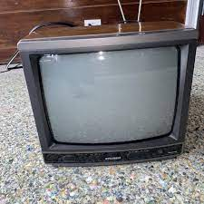

텔레비전(영어: television 축약형은 TV 또는 tele 또는 telly, 문화어: 텔레비죤)은 동영상 및 화상신호를 전송하는 원거리 통신 대중 매체이다. 단색 또는 컬러로 된 화상정보를 전송하며 소리가 포함된 정보가 전달될 수 있다. 일상에서 텔레비전은 텔레비전 수상기, 텔레비전 프로그램, 텔레비전 방송 등을 뜻하는 말로 사용된다. 텔레비전 수상기는 전파 또는 케이블로 전달되는 방송 신호를 복조하는 전자 회로와 채널을 선택할 수 있도록 하는 튜너, 그리고 화상을 보여주는 디스플레이 장치로 구성되어 있다. 텔레비전 수상기를 구성하는 디스플레이 장치의 종류는 브라운관, LCD 패널, LED 패널 등으로 나뉜다. 디지털 신호를 처리할 수 있는 텔레비전은 디지털 텔레비전(영어: Digital Television, DTV)라고 하고, 화면의 해상도를 높인 방송을 수신할 수 있는 것은 고선명 텔레비전(영어: high-definition television, HDTV)라고 한다.
